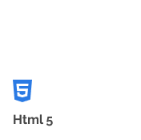

Hola, mi nombre es Richard Ortiz y construyo paginas web
Soy formado como psicólogo en la Universidad Central de Venezuela, pero siempre he sido un apasionado por la tecnología, es por eso que en busca de nuevos retos y aprendizajes decidí inciar mi formación como programador en Alura Latam, es una experiencia super enriquecedora que me ha permitido desarrollar nuevas habilidades y aplicar las obtenidas en un área nueva y apasionante.
- Github🡕
- Linkedin🡕
- Instagram🡕
- Curriculo🡕
Sobre mi
Soy un apasionado por la tecnología y los videojuegos, siempre me ha llamado la atención como funcionan las tecnologías y toda la lógica que se encuentra detrás de cada uno de los programas, aplicaciones y paginas web.
Actualmente me encuentro realizando la ruta de aprendizaje en Front-End y adquiriendo nuevos conocimientos que me permitan desarrollar proyectos profesionales.
Skills
